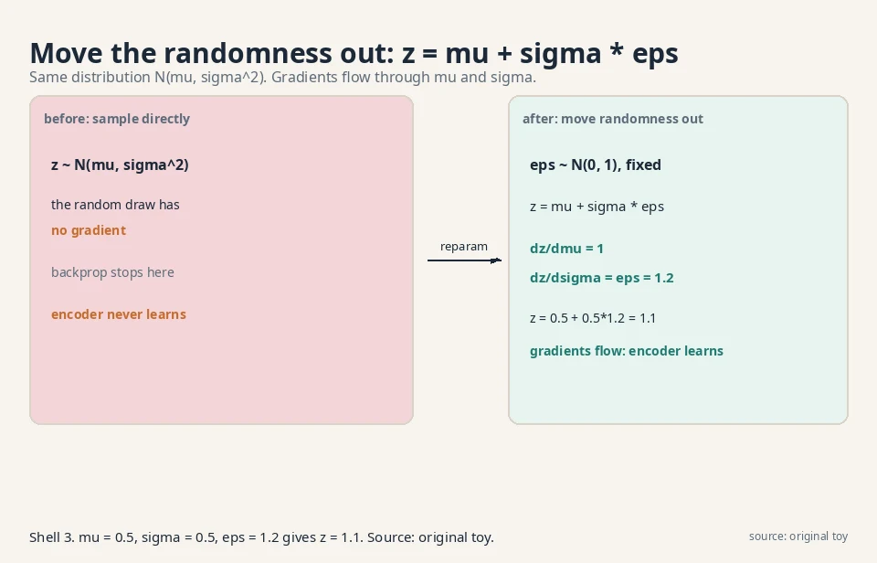
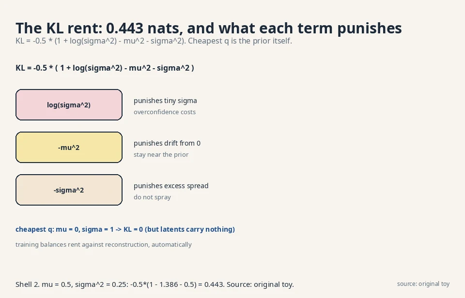
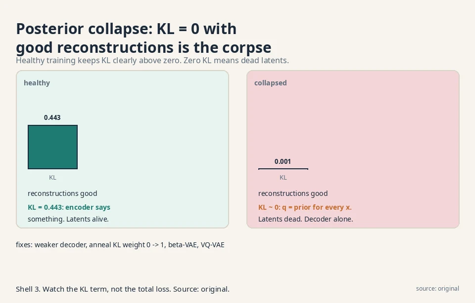
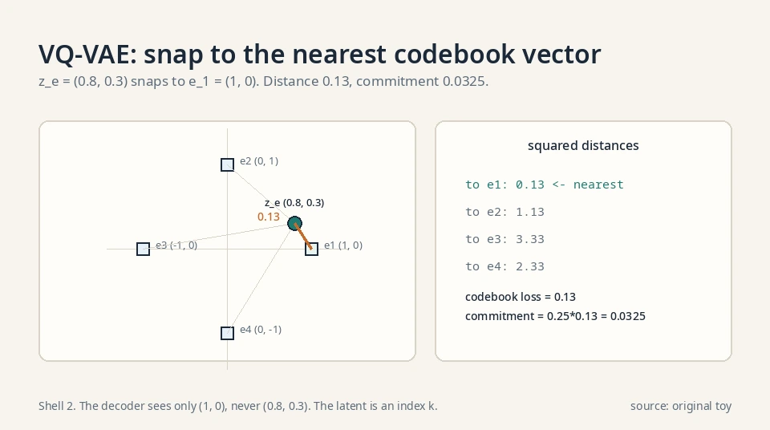
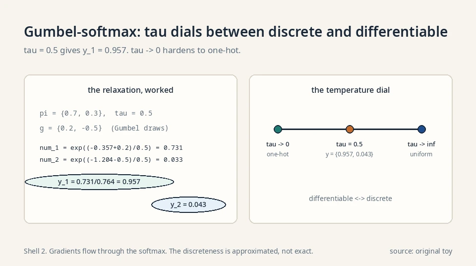
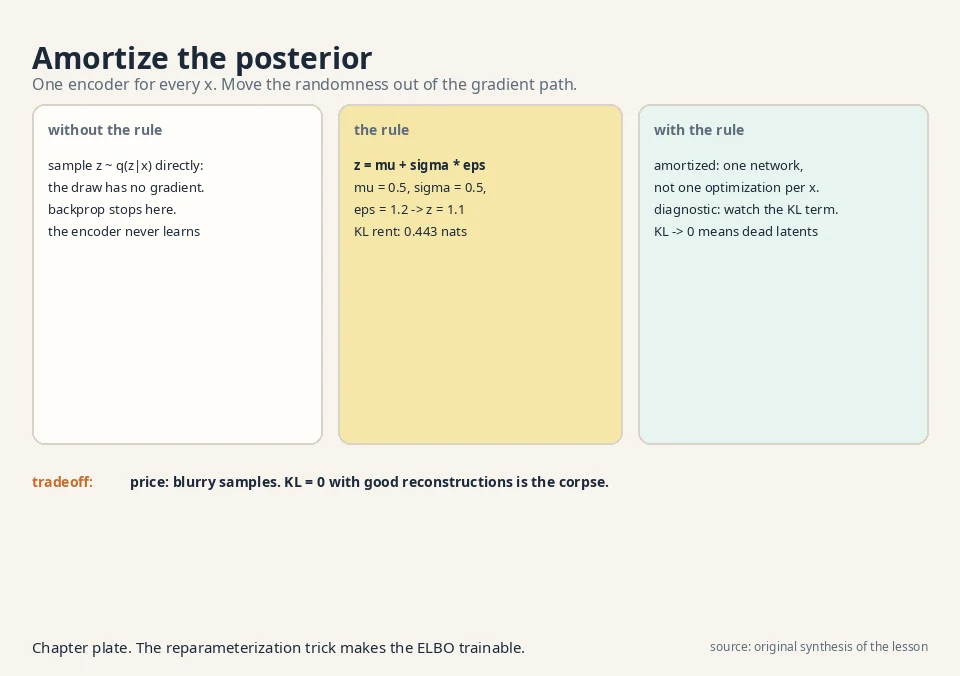

Lecture 7: Variational Autoencoders
Video blocked (ad-blocker or local file mode).
Watch on YouTubeVideo not loading? Watch on YouTube
The lecture video for this lesson: training the VAE, reparameterization on the board. Timestamps in the text link to the exact moment.
The task: learn the guesser
Lesson 6 derived the ELBO but left q(z|x), the guess at the hidden causes, as an abstract distribution. The VAE makes it concrete: q is a neural network, the encoder. It takes a data point x and outputs a distribution over causes. A second network, the decoder, takes a cause z and outputs a distribution over data. The prior p(z) is fixed to the standard Gaussian, N(0, 1): causes live in a round, centered cloud.
x (photo) --encoder--> q(z|x) = N(mu(x), sigma(x)) --sample--> z
|
z --decoder--> p(x|z) (reconstructed photo) |
v
prior: z ~ N(0, 1)
The encoder compresses. The decoder renders. The latent space is the compressed imagination from Lesson 6, now with coordinates a network learns.
The loss a computer can evaluate
Concretely, the encoder outputs two vectors: μ(x), the most likely causes, and σ(x), the uncertainty. So q(z|x) = N(μ(x), diag(σ(x)²)): a Gaussian per data point. The ELBO becomes a loss a computer can evaluate:
loss = -E_q[ log p_theta(x|z) ] + KL( q(z|x) || N(0,1) )
reconstruction error keep causes near the prior
All logs in this lesson are natural logs (base e).
For a Gaussian decoder, the reconstruction term is the squared pixel error between x and the decoder’s output. Familiar territory: an autoencoder. The KL term is the new rent from Lesson 6.
Where sampling breaks backprop
The wall
Training needs the gradient of the loss with respect to the encoder’s weights. The reconstruction term is an expectation over z ~ q(z|x), estimated by sampling. Here is the wall: sampling is not differentiable. The operation “draw z at random” has no gradient. Backpropagation stops at the random draw, and the encoder never learns.
The naive fix and its variance
The naive fix, the score-function estimator, differentiates through the sampling probabilities instead. It works but its variance is enormous: the gradient estimate jumps wildly between samples, and training crawls. The variance scales with the dimension of z and with how sharply the loss changes between nearby points. In practice you need many samples per step to make progress, which is expensive. The lecture’s answer is cleaner.
The key question
How do you draw a random sample whose gradient flows back into the network that chose the distribution?
The new idea: move the randomness out
The trick
The reparameterization trick: do not sample from N(μ, σ²) directly. Sample ε from N(0, 1), a fixed distribution with no parameters, and set:
z = mu + sigma * epsilon, epsilon ~ N(0, 1)
If ε ~ N(0,1), then μ + σε ~ N(μ, σ²). Same distribution, different plumbing. The randomness now lives in ε, which has no knobs. The knobs μ and σ sit in a deterministic formula, and gradients flow through them:
dz/dmu = 1, dz/dsigma = epsilon
Worked with numbers
Work it with numbers. The encoder says μ = 0.5, σ = 0.5 for some x. Draw ε = 1.2 from the standard Gaussian.
z = 0.5 + 0.5 * 1.2 = 1.1
The sample is 1.1. If the loss says “z should have been smaller”, the gradient flows: ∂z/∂μ = 1 (raise μ raises z one-for-one), ∂z/∂σ = 1.2 (σ’s effect scales with the draw). The encoder learns from every sample. One line of algebra removed the wall.
Why the distribution is unchanged
The trick is not an approximation. A linear transform of a Gaussian is exactly Gaussian: ε ~ N(0,1) implies μ + σε ~ N(μ, σ²) with no error. The samples come from the identical distribution the encoder specified. Only the plumbing changed: randomness moved from the parameterized node to a fixed node upstream. That is why the ELBO stays exact and only the gradient estimator changes.

The KL term, by hand
The closed form
The regularization term also needs computing: KL(q(z|x) || N(0,1)) for q = N(μ, σ²). For Gaussians this has a closed form (per dimension):
KL = -0.5 * ( 1 + log(sigma^2) - mu^2 - sigma^2 )
The derivation, step by step
A math course shows the integral. KL(N(μ,σ²) || N(0,1)) is E_q[log q(z) − log p(z)]. Write both log-densities:
log q(z) = -0.5*log(2*pi*sigma^2) - (z - mu)^2 / (2*sigma^2) log p(z) = -0.5*log(2*pi) - z^2 / 2
Subtract. The −0.5·log(2π) terms partially cancel:
log q - log p = -0.5*log(sigma^2) - (z-mu)^2/(2*sigma^2) + z^2/2
Take the expectation under q. Two facts: E_q[(z−μ)²] = σ² (the variance), and E_q[z²] = μ² + σ² (mean squared plus variance). So:
KL = -0.5*log(sigma^2) - sigma^2/(2*sigma^2) + (mu^2 + sigma^2)/2 = -0.5*log(sigma^2) - 0.5 + mu^2/2 + sigma^2/2 = -0.5 * ( 1 + log(sigma^2) - mu^2 - sigma^2 )
Preconditions: σ² > 0. The log needs a positive argument. σ = 0 would be a point mass, not a Gaussian. The formula is per dimension. For a d-dimensional diagonal Gaussian, sum over dimensions. With μ = 0.5, σ² = 0.25:
KL = -0.5 * ( 1 + log(0.25) - 0.25 - 0.25 ) = -0.5 * ( 1 - 1.386 - 0.5 ) = -0.5 * ( -0.886 ) = 0.443
The encoder pays 0.443 nats of rent for placing its causes at 0.5 ± 0.5 instead of at the prior’s 0 ± 1.
Reading the incentives
Read the formula’s incentives: log(σ²) punishes tiny σ (overconfidence), −μ² punishes drift from zero, −σ² punishes excess spread. The cheapest q is the prior itself (μ = 0, σ = 1 gives KL = 0), but then the causes carry no information about x and reconstruction suffers. Training balances the two terms automatically.

The full training step, mechanical
Now the full training step is mechanical: encode x to (μ, σ). Draw ε. Form z = μ + σε. Decode to x̂. Loss = pixel error + 0.443-style KL. Backpropagate through everything. Sampling, once the wall, is now one line.
Where it breaks: posterior collapse
The pathological balance
The balance can tip pathologically. Suppose the decoder is powerful enough to model the data alone, ignoring z entirely. Then the ELBO is maximized by setting q(z|x) = p(z) for every x: KL = 0, reconstruction handled by the decoder’s own strength. The numbers look great (KL fell from 0.443 to 0!) while the latent space died: z carries zero information about x, and sampling z produces no variety. This is posterior collapse. The model technically optimized the bound and learned nothing.
The diagnostic
Detect it by the KL term: healthy training keeps the KL clearly above zero (the encoder is saying something). A KL glued to zero with good reconstructions is the corpse, not the success. The decision rule: plot the KL per dimension over training. If all dimensions sit at ~0 while the reconstruction loss falls, the latents are dead. Do not celebrate the low total loss. It is the bound being gamed, exactly the failure Lesson 6 warned about.

The fixes: three answers
Posterior collapse has three standard answers. Weaken the decoder: a less powerful decoder must lean on z. Anneal the KL weight from 0 upward during training: let reconstruction win early, then charge rent. Constrain the bottleneck: the β-VAE and VQ-VAE variants below develop this answer with worked numbers.
β-VAE: the disentanglement dial, worked
β-VAE multiplies the KL term by β > 1:
loss = reconstruction + beta * KL( q(z|x) || N(0,1) )
Take the toy q with KL = 0.443 and set β = 4. The rent becomes 4 · 0.443 = 1.772 nats. The encoder now pays four times more for every dimension it uses, so each dimension must earn its keep in reconstruction savings. Dimensions that carry redundant information get priced out: their μ → 0, σ → 1, contributing nothing. What survives is a sparse code where each live dimension tends to control one generative factor (pose, lighting, smile). That is disentanglement, and β is the dial.
The price is exact: higher β, worse reconstruction. At β = 1 the model is a plain VAE. At β = 4 the reconstructions blur: the rent forces the encoder to throw away fine detail. At β = 100 almost every dimension dies and the model reconstructs the dataset mean. The decision rule: raise β until the latents disentangle, then stop before the reconstructions dissolve. There is no free disentanglement.
VQ-VAE: the snap mechanism, worked
VQ-VAE replaces the continuous Gaussian with a discrete codebook: K learned vectors e_1..e_K. The encoder outputs a continuous vector z_e(x). It snaps to the nearest codebook vector:
z_q = e_k, k = argmin_j || z_e(x) - e_j ||
Work it. K = 4 codebook vectors in 2-D: e_1 = (1,0), e_2 = (0,1), e_3 = (−1,0), e_4 = (0,−1). The encoder outputs z_e = (0.8, 0.3). Squared distances:
to e_1: (0.8-1)^2 + (0.3-0)^2 = 0.04 + 0.09 = 0.13 to e_2: (0.8-0)^2 + (0.3-1)^2 = 0.64 + 0.49 = 1.13 to e_3: (0.8+1)^2 + 0.09 = 3.24 + 0.09 = 3.33 to e_4: 0.64 + (0.3+1)^2 = 0.64 + 1.69 = 2.33
Nearest is e_1: z_q = (1, 0). The decoder sees only (1, 0), never (0.8, 0.3). The latent the decoder uses is an index k, a discrete token. Transformers eat tokens.
VQ-VAE: the two codebook losses, worked
Two losses train the codebook. The codebook loss ||sg[z_e] − e_k||² = 0.13 moves e_1 toward the encoder’s output (sg = stop gradient: the encoder is frozen for this term). The commitment loss β·||z_e − sg[e_k]||² with β = 0.25 gives 0.25 · 0.13 = 0.0325, pulling the encoder to commit to its chosen code instead of drifting between codes. One loss moves the codebook to the encoder. The other moves the encoder to the codebook.
VQ-VAE: the straight-through gradient estimator
The argmin has no gradient: a tiny change in z_e either keeps the same nearest code or jumps to another. So the decoder’s gradient is copied straight through to the encoder, as if the snap were the identity. That copy is the straight-through estimator. It is biased (the snap is not the identity), but it works: the encoder learns to place z_e near codes the decoder uses well.
Why it matters: no KL-to-Gaussian term, so no posterior collapse of the VAE kind. That is why discrete image tokenizers (VQ-VAE, VQGAN) became the standard front end for autoregressive image models: the image becomes a sequence of codebook indices, and Lesson 10’s chain rule takes over.

Gumbel-softmax: reparameterizing the discrete
The reparameterization trick needs continuous variables. For discrete latents, the Gumbel-softmax gives a differentiable relaxation. To sample a category with probabilities π_1..π_K: draw g_i = −log(−log u_i) with u_i uniform (the Gumbel draw), then
y_i = exp( (log pi_i + g_i) / tau ) / sum_j exp( (log pi_j + g_j) / tau )
Work it: π = {0.7, 0.3}, temperature τ = 0.5, draws g_1 = 0.2, g_2 = −0.5. Numerators: exp((−0.357 + 0.2)/0.5) = exp(−0.314) = 0.731, and exp((−1.204 − 0.5)/0.5) = exp(−3.408) = 0.033. So y_1 = 0.731/0.764 = 0.957, y_2 = 0.043. As τ → 0, y hardens to a one-hot sample. As τ → ∞, y flattens to uniform. The temperature is the dial between differentiable and discrete. Gradients flow through the softmax. The discreteness is approximated, not exact.
The aggregate posterior
The KL term matches each q(z|x) to the prior, but generation samples z from the prior and decodes. What matters is the aggregate posterior: q̄(z) = E_x[q(z|x)], the mixture of all encodings. If q̄ differs from p(z), prior samples land where the decoder never trained.
Jensen gives the relationship: E_x[KL(q(z|x)||p(z))] ≥ KL(q̄(z)||p(z)). The per-point KL can be small while the aggregate still mismatches: imagine q(z|x) = N(±3, 0.01) depending on x, each far from N(0,1) in location but the mixture… actually the per-point KL would be large there. The real failure: each q(z|x) = N(0,1) exactly (collapse), aggregate equals prior, but the latents carry nothing. The diagnostic is behavioral: sample z ~ p(z), decode, and look. If the samples look nothing like reconstructions, the aggregate and the prior have parted ways, whatever the KL says.

The honest price
The VAE’s samples are blurry, and now you know exactly why: three compounding causes. The forward-KL heritage (Lesson 2) covers modes and generates in-between blends. The Gaussian decoder assumes pixel noise, which smears edges. And the diagonal-Gaussian q cannot express multimodal posteriors, so the bound stays loose where the truth is complex. The VAE won stability (plain maximization, no adversary) and a usable latent space (interpolate, edit, infer), and paid in sharpness. Diffusion keeps the stability and reclaims the sharpness. Lessons 8-10.
| VAE pain | Mechanism | Number |
|---|---|---|
| Cannot backprop through sampling | Reparameterization: z = μ + σε | ∂z/∂μ = 1, ∂z/∂σ = ε = 1.2 in the toy |
| KL term looks intractable | Closed form for Gaussians | 0.443 for μ = 0.5, σ² = 0.25 |
| Posterior collapse | Decoder ignores z. KL → 0 | KL 0 with good reconstructions = dead latents |
| Blurry samples | Forward KL + Gaussian decoder + diagonal q | Price of stability |
Where VAEs run in real systems
The VAE’s second life is compression, not generation. Latent diffusion models compress images with a VAE encoder into a small latent grid, run diffusion there, and decode back: the VAE is the codec, diffusion is the generator. The numbers, verified October 2026:
- Stable Diffusion 1.x/2.x: the autoencoder uses a downsampling factor of 8 and maps H×W×3 images to H/8×W/8×4 latents (per the official v1.5 model card). A 512×512×3 image becomes a 64×64×4 latent: 48× smaller. The latents are scaled by 0.18215 (the measured latent std) before diffusion. This is the kl-f8 VAE lineage from the latent-diffusion paper.
- Stable Diffusion 3.5: 16 latent channels at the same 8× downsampling: 128×128×16 for a 1024×1024 image, 12× smaller. More channels, less bottleneck.
- FLUX.1: 16 latent channels as well (its VAE lineage), feeding the rectified flow transformer.
The reparameterization trick itself outlived the VAE: any model that samples a continuous latent during training uses it. β-VAE’s disentanglement dial survives in representation-learning research. VQ-VAE’s discrete codebook became the standard way to tokenize images for transformer models. [uncertain] DALL-E’s dVAE and VQGAN details, and which current production systems use each variant, are not verified here.
Videos for this lesson
Lecture video: the VAE, encoder to decoder, the ELBO made concrete. If the embed is blocked: watch on YouTube.
External explainer: vanilla autoencoders versus VAEs, and where VQ-VAE and masked variants fit. If the embed is blocked: watch on YouTube.

Rewrite sampling from N(μ, σ²) as z = μ + σ·ε with ε ~ N(0,1) fixed. The distribution is identical, but the randomness moved to the parameter-free ε, so gradients flow: ∂z/∂μ = 1, ∂z/∂σ = ε. In the toy, μ = 0.5, σ = 0.5, ε = 1.2 gave z = 1.1, and the encoder learns from that sample. It differentiates through sampling probabilities and is unbiased, but its variance is so large that training needs far more samples to make progress. Reparameterization gives a low-variance gradient from a single sample. It only works for continuous variables you can reparameterize. Discrete latents need other tricks (VQ-VAE sidesteps this).
Encoder outputs μ = −1.0, σ = 2.0. Draw ε = 0.5. Then z = −1.0 + 2.0·0.5 = 0.0. Gradients: ∂z/∂μ = 1, so raising μ by 0.1 raises z by 0.1. ∂z/∂σ = 0.5, so raising σ by 0.1 raises z by 0.05. The KL rent for this q: −0.5·(1 + log 4 − 1 − 4) = −0.5·(1 + 1.386 − 5) = 1.307 nats. Expensive: the encoder placed its mass far from the prior and wide. Neither by itself. It is the rent for an informative q. If reconstruction is excellent, the rent is justified. If the KL were 0.001 with the same reconstruction, the encoder would be saying nothing and the latents would be dead. Judge the KL against what the latents buy.
Reconstruction error plus KL(q(z|x) || N(0,1)). The encoder outputs μ(x), σ(x). You sample z = μ + σε, decode, and pay pixel error plus the KL rent. For μ = 0.5, σ² = 0.25 the rent is 0.443 nats. The loss balances fitting the data against keeping causes near the prior. The decoder learns to ignore z, so the ELBO is maximized by q(z|x) = prior: KL = 0, reconstructions fine, latents dead. A KL glued to zero alongside good reconstructions is the diagnostic. Fixes: weaker decoder, KL annealing, or β-VAE/VQ-VAE variants.
μ = 0, σ² = 1. Plug in: −0.5·(1 + log 1 − 0 − 1) = −0.5·(0) = 0. Correct: identical distributions have zero KL. Now q = N(0, 0.01): −0.5·(1 + log 0.01 − 0 − 0.01) = −0.5·(1 − 4.605 − 0.01) = 1.807. A confident spike far from the prior’s spread pays 1.8 nats. The log term is what punishes overconfidence. Because log(σ²) → −∞ as σ → 0. A spike claims near-certainty about the cause, and the prior (spread 1) disagrees violently. The rent prices the disagreement. This is the mechanism that keeps the latent space smooth and sampleable.
Three compounding reasons. The forward-KL objective is mode-covering: it spreads mass over all modes including the valleys between them. The Gaussian decoder models pixels as independent noise, smearing edges. The diagonal-Gaussian q cannot capture complex posteriors, leaving the bound loose. GANs look sharper because their JS-like objective tolerates dropping modes instead of blending them. Disentanglement at the cost of fidelity. β > 1 raises the KL rent, forcing each latent dimension to justify itself, which empirically separates causes like pose and lighting into different dimensions. Reconstruction gets worse as β rises. It is a dial between interpretability and sharpness.
The latent space is not smooth: nearby z values decode to unrelated images. Likely cause: the KL term is too weak relative to reconstruction (β effectively below 1, or annealing never ramped up), so the encoder placed data points in isolated islands with empty space between them. Sampling or interpolating through the gaps hits undecodable regions. Fix: raise the KL weight toward 1 and retrain, or check for partial posterior collapse on some dimensions. Linearly interpolate z between two encodings in 10 steps and decode each. Smooth morphing means a smooth space. Jumps mean islands. Also sample z ~ N(0,1) fresh: if the samples look nothing like reconstructions, the encoder’s q has drifted from the prior and the prior is no longer a valid sampler.
Train a VAE on normal readings only. The encoder q(z|x) compresses each reading. The decoder reconstructs it. The anomaly score is the reconstruction error plus the KL. Normal data reconstructs well with low rent. Anomalous data either reconstructs badly (unseen pattern) or needs an exotic q (high KL). Threshold the sum on held-out normal data. The reparameterization trick is what makes the encoder trainable. Without it there is no gradient. A powerful decoder can reconstruct anomalies too (it memorized the manifold broadly). The KL term catches the cases where the encoder had to contort q to explain the input. Both terms are the ELBO. Dropping one drops half the evidence signal.
Recap: the whole lesson on one screen
- The task. Make q(z|x) a neural network (encoder) and learn it with the decoder.
- Where it breaks. Sampling z is not differentiable. Backprop stops at the random draw.
- The key question. How do you differentiate through a sample?
- The fix. z = μ + σ·ε, ε ~ N(0,1). Randomness moves to ε. Gradients flow: ∂z/∂μ = 1, ∂z/∂σ = ε.
- Worked. μ = 0.5, σ = 0.5, ε = 1.2 → z = 1.1. KL rent = 0.443 nats by the closed form.
- Training. Encode, sample, decode, pay pixel error + KL, backpropagate through everything.
- Posterior collapse. KL → 0 with good reconstructions means the latents died. The decoder works alone.
- The price. Blurry samples (forward KL + Gaussian decoder + diagonal q) in exchange for stability and a usable latent space.
Official sources and further reading
Official: - W5L20: Variational Autoencoder (VAE): paper - W6L21: Training VAE, reparameterization methods: paper
Further reading: - Kingma and Welling, “Auto-Encoding Variational Bayes” (2013): - reparameterization and the VAE loss. - Higgins et al., “β-VAE: Learning Basic Visual Concepts with a Constrained Variational Framework” (2017): - the disentanglement dial. - van den Oord et al., “Neural Discrete Representation Learning” (VQ-VAE, 2017): - discrete latents.
Caveats. The W5L20 transcript was bot-blocked, so this lesson follows the standard Kingma-Welling presentation with the ELBO framing confirmed in the W5L18 transcript. [uncertain] The lecture’s exact examples, its reparameterization variants, and its β-VAE/VQ-VAE emphasis are unknown.
Connections to the other courses
- CS229 L10 (EM/PCA): that course shows PCA is the optimal linear compressor. A linear VAE recovers the same answer. Worked tie: data (2,1), (1,2), (−2,−1), (−1,−2) has covariance [[2.5, 2],[2, 2.5]], whose top eigenvector is (1,1)/√2 with eigenvalue 4.5. The optimal 1-D codes are the projections: ±3/√2 ≈ ±2.12. A linear VAE’s ELBO is maximized by exactly this direction: PCA is the VAE with linear encoder, linear decoder, and no KL.
- CS229 L11 (diffusion models): that course’s models can be read as VAEs with a very deep hierarchy of latents and a fixed encoder. Lessons 8-9 make that reading exact.